23 个实用小技巧
关注公众号，AI 技术干货及时送达
↓
推荐阅读：榨干 Claude Code 的 16 个实用小技巧
大家好，我是R哥。
接这篇《榨干 Claude Code 的 16 个实用小技巧（高端玩法，建议收藏！
）》，继续分享 Claude Code 高端玩法。
PS：（内容干货，建议收藏慢慢看～关注公众号，不迷路～）
17、进入 Bash 模式
之前的分享介绍了如何使用 Claude Code 和 Git / Linux 进行交互，但是它是会消耗你的 Token 的，如果是一些简单的命令，可以直接进入 Bash 模式。
使用方式：在命令前使用 !
即可：
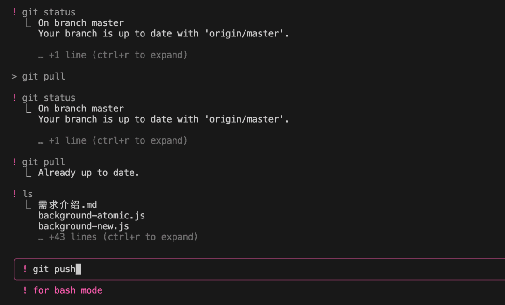
在 Bash 模式下是直接执行命令的，不用大模型思考，所以又快，又不费钱。
18、自动接受编辑
在 Claude Code 中，可以通过按下 shift + tab 键来切换到「自动接受编辑」功能（auto-accept edits on）:
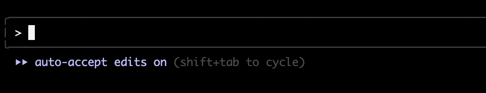
开启此功能后，Claude Code 会自动创建、编辑文件，而不是每次都需要我们手动确认。
和之前分享的 --dangerously-skip-permissions 模式相比，自动接受编辑功功能安全性要更高，首先它不是全局的，自动审批权限范围也仅限文件编辑。
19、使用计划模式
在 Claude Code 中，可以通过按下 shift + tab 键来切换到「计划模式」功能（plan mode on）:
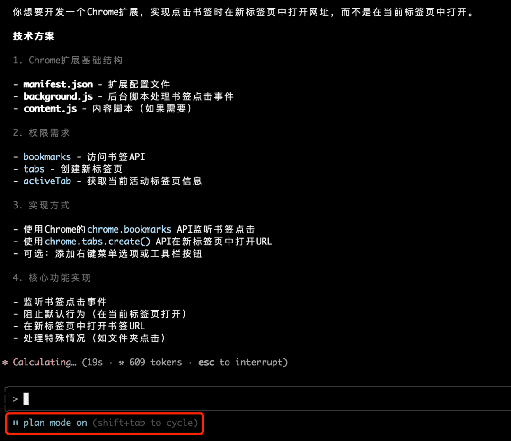
在项目前期需要规划功能的时候可以用到这个模式，它会自动给到计划方案，然后底部你是否执行：
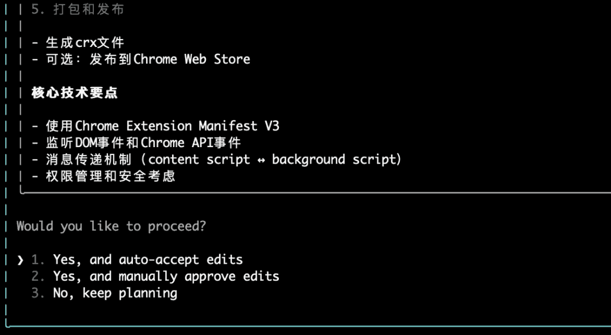
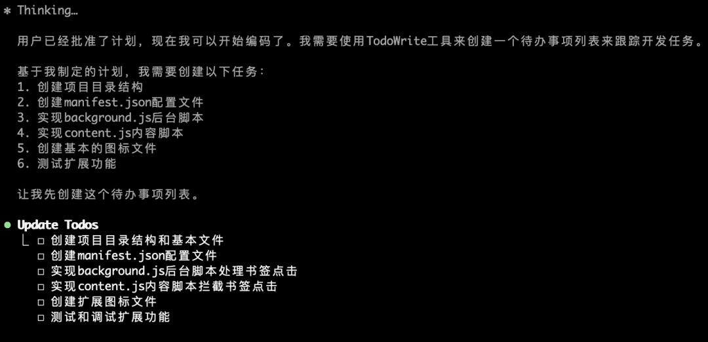
如点击第一个选项 Yes, and auto-accept edits，它就会进入「自动接受编辑」模式，根据 todo list 完成所有之前规划的功能。
按下 shift + tab 键，可以在一般模式、自动接受编辑、计划模式之间来回切换。
20、使用 MCP 提效
Claude Code 支持 MCP 协议，支持各种添加方法。
添加 MCP 服务器
如添加 MCP stdio 服务器：
# 基本语法claude mcp add <name> <command> [args...]# JSON 方式claude mcp add-json <name> '<json>'比如我来添加一个浏览器自动化操作的 MCP 服务器：
https://github.com/modelcontextprotocol/servers-archived/tree/main/src/puppeteer
一般添加方法如下：
claude mcp add puppeteer npx -- -y @modelcontextprotocol/server-puppeteer通过 JSON 方式添加：
claude mcp add-json -s user puppeteer '{ "command": "npx", "args": ["-y", "@modelcontextprotocol/server-puppeteer"]}'使用 -s user 标志，可以将 MCP 服务器添加到全局配置（可以在 ~/.claude.json 文件中查看），而不是只针对某个项目，默认不填为 local 即当前项目。
管理 MCP 服务器
使用以下命令管理 MCP 服务器：
# 列出所有已配置的 MCP 服务器claude mcp list# 获取指定的 MCP 服务器信息claude mcp get xx# 删除指定的 MCP 服务器claude mcp remove xx列出所有已配置的 MCP 服务器：
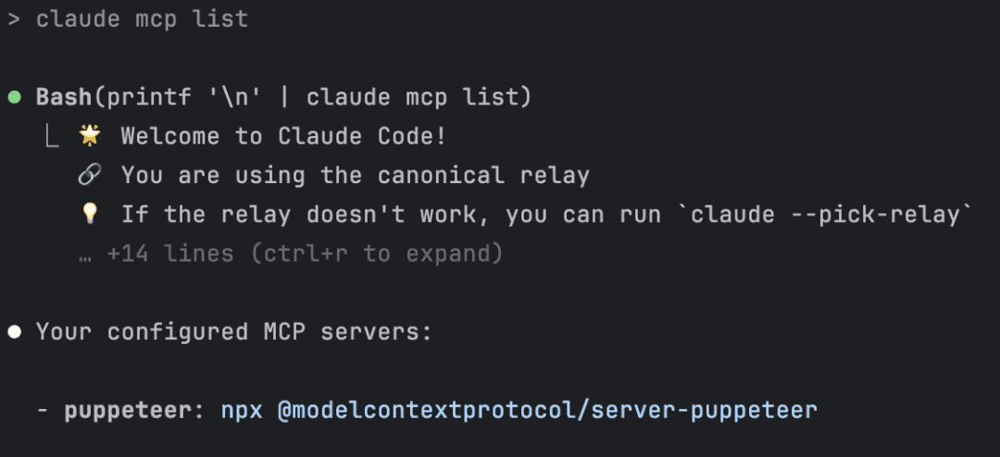
获取指定的 MCP 服务器信息：
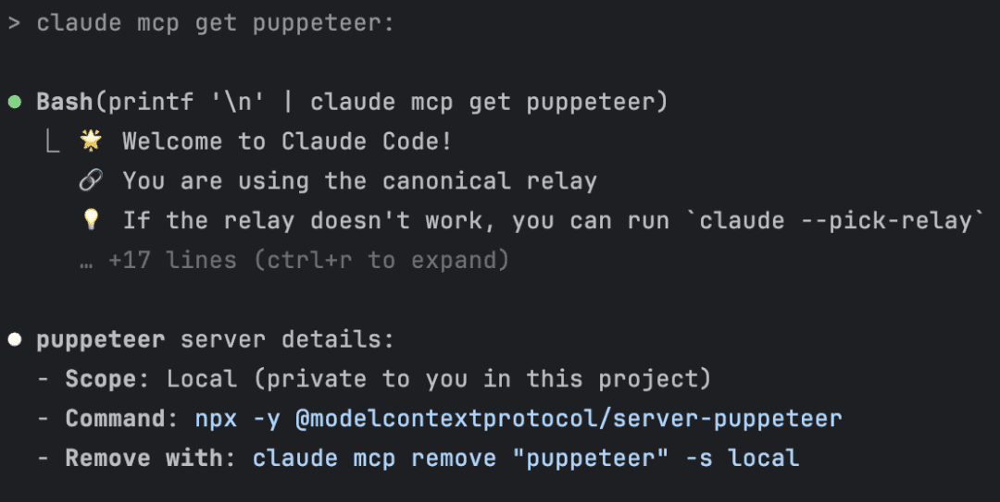
使用 /mcp 命令来查看 MCP 服务器相关信息：
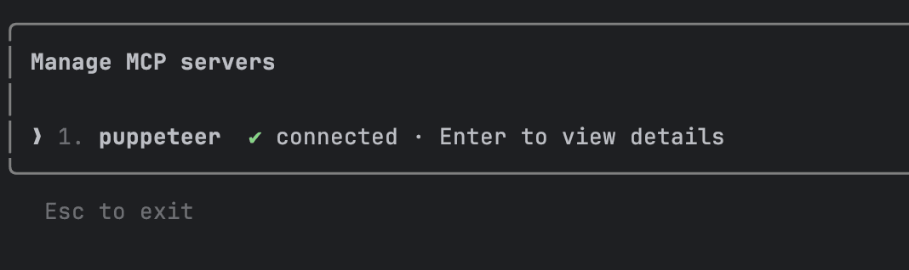
使用 MCP 服务器
打开搜索用户页面，按ID搜索6并返回搜索出来的用户信息
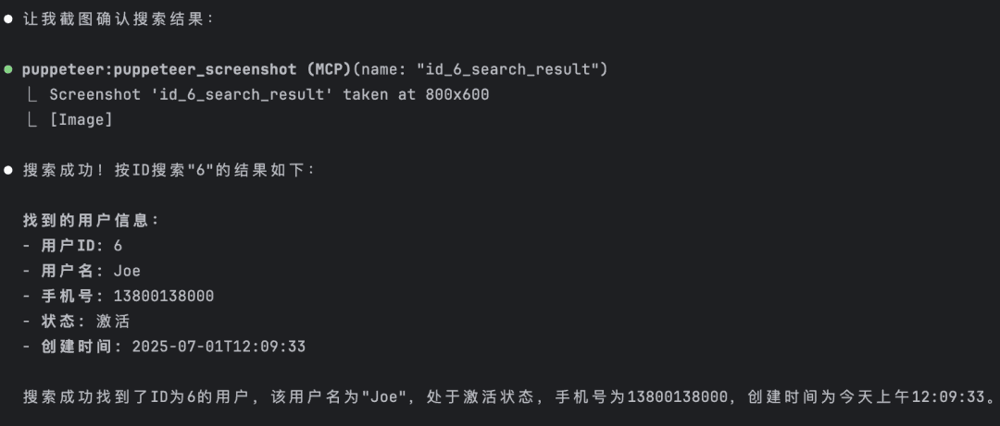
打开搜索用户页面，按用户名搜索“sam”并返回搜索出来的用户信息
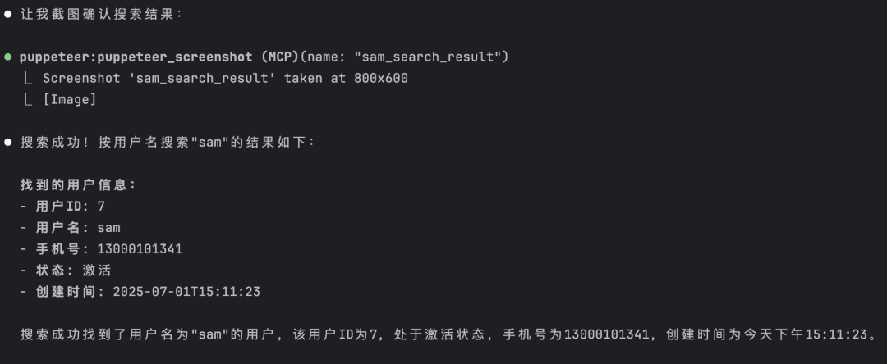
使用这个 MCP 工具，它会自动安装 Puppeteer 用的测试 Chrome 浏览器，然后自动填充参数，自动查询，自动截图，然后返回搜索结果。
推荐 MCP 服务器
除了上面使用的 Puppeteer 浏览器自动化 MCP，这里再推荐一个强大的免费 MCP 工具——context7：
它可以为大模型和 AI 代码编辑器提供最新（或者特定版本）的文档、库、代码、信息等，避免使用过时的数据，到目前为止，官网已经收录了 2w+ 个库，并支持手动添加自己的库。
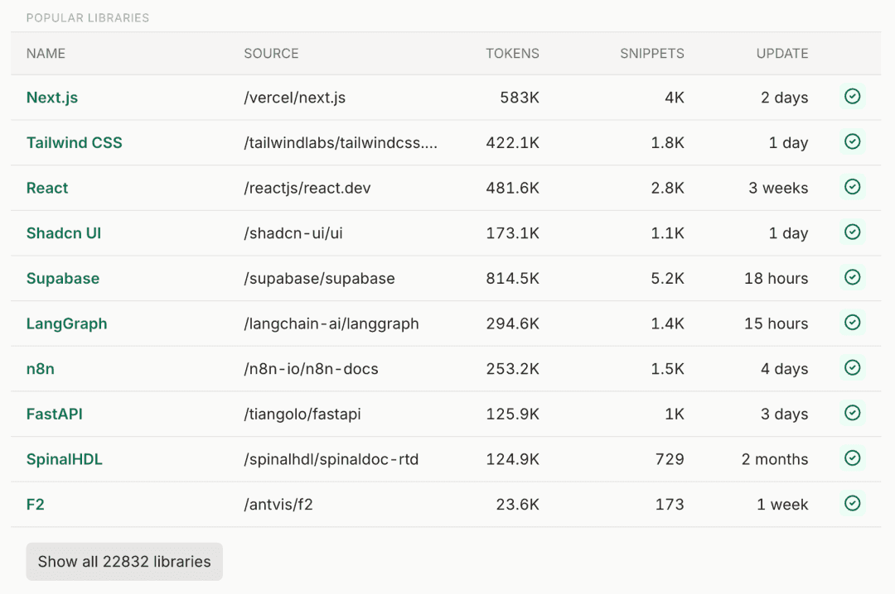
在 Claude Code 中进行导入：
claude mcp add-json -s user context7 '{ "command": "npx", "args": ["-y", "@upstash/context7-mcp"] }'
测试一下：
userMapper.selectOne 是怎么实现的？它返回了什么数据结构？请使用 context7
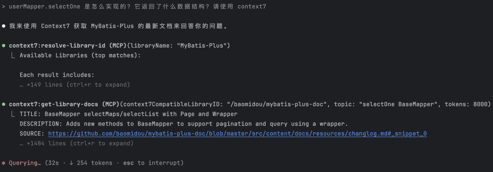
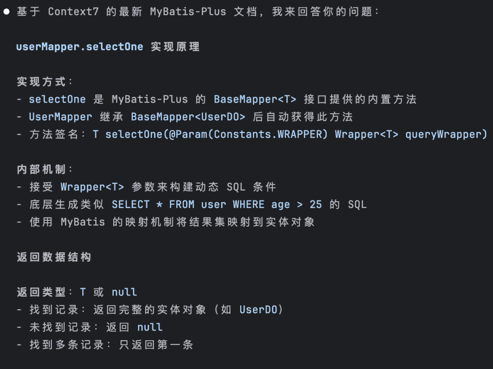
如图，它会告诉你使用 Context7 相关工具来获取 MyBatis-Plus 的最新文档来回答问题。
21、使用之前的消息
连续按两次 ESC 键可以跳到之前的消息：
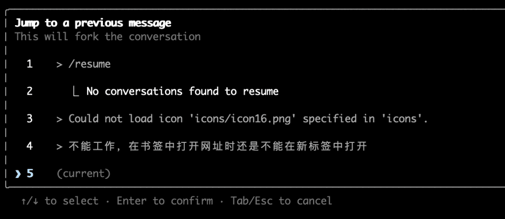
上下方向键选择一条消息，然后就会回到对应的提示词命令行窗口，也可以在此基础h重新编辑提示词。
22、回滚代码
直接发送「回滚」即可：
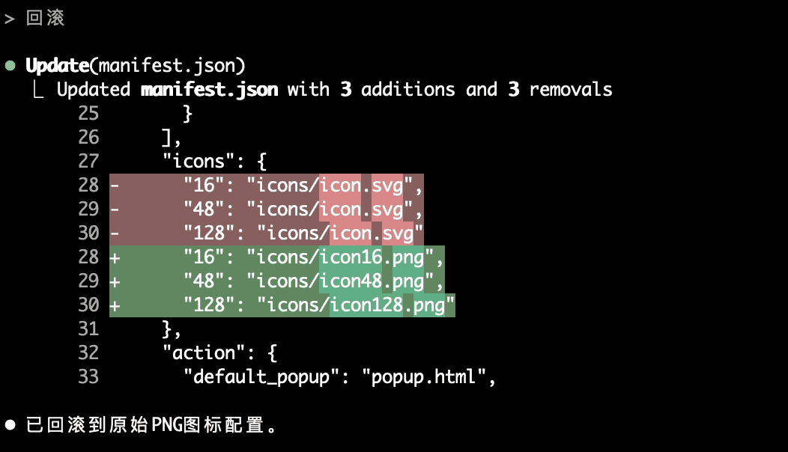
这个类似 Cursor 的 checkpoint 检查点功能，如果不想回滚了，再发送一次「撤销」即可：
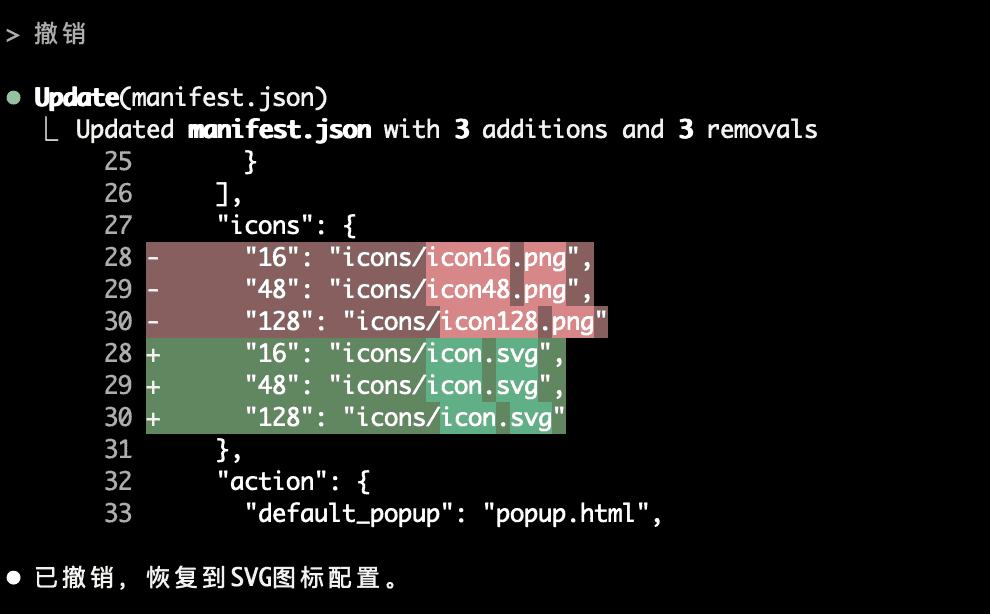
另外，建议再配合 Git 版本控制管理，以防代码丢失。
23、版本升级
Claude Code 安装后可以手动升级最新版：
sudo npm install -g @anthropic-ai/claude-code
其实和安装命令是一样的，及时升级以使用最新玩法。
检查是否升级成功：
claude --version
成功安装会显示最新版本号。
好了，这次的分享就到了～
以上就是我在实际使用 Claude Code 编程时的一些高效技巧和避坑心得，真的都是无保留实践总结。
AI 不会淘汰程序员，但不会用 AI 的除外，会用 AI 的程序员才有未来！
未完待续，接下来会继续分享下 Claude Code 心得体验、高级使用技巧，公众号持续分享 AI 实战干货，关注「AI技术宅」公众号和我一起学 AI。
版权声明： 本文系公众号 "AI技术宅" 原创，转载、引用本文内容请注明出处，抄袭、洗稿一律投诉侵权，后果自负，并保留追究其法律责任的权利。
< END >
推荐阅读：
用了 Claude Code，才发现 Cursor 是弱智。
榨干 Claude Code 的 16 个实用小技巧
年度爆款！全球最火的 AI 编程工具合集
MCP 是什么？如何使用？一文讲清楚！
从零开始开发一个 MCP Server！保姆级教程！
62 个 DeepSeek 万能提示词（建议收藏）
33k+ star！全网精选的 MCP 一网打尽！
更多 ↓↓↓ 关注公众号 ✔ 标星⭐ 哦